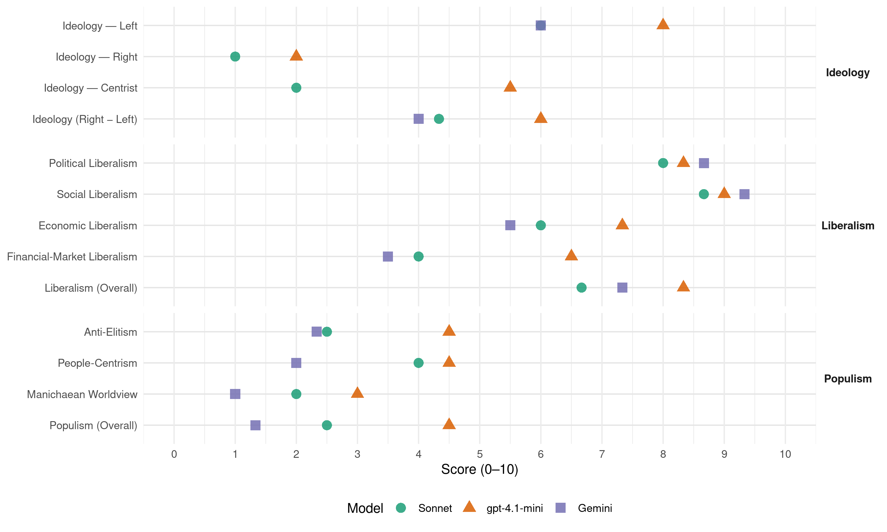

90/Greens (Germany, 2005)
manifesto_id 41113_200509
Get full text: This site shows derived annotations and short verbatim quotes only. The full manifesto text is © Manifesto Project / WZB — obtain it via manifesto-project.wzb.eu using the manifesto_id above.
Headline scores
| Dimension | Sonnet | gpt-4.1-mini | Gemini |
|---|---|---|---|
| Populism (Overall) | 2.5 | 4.5 | 1.3 |
| Anti-Elitism | 2.5 | 4.5 | 2.3 |
| People-Centrism | 4.0 | 4.5 | 2.0 |
| Manichaean Worldview | 2.0 | 3.0 | 1.0 |
| Ideology (Right − Left) | 4.3 | 6.0 | 4.0 |
| Liberalism (Overall) | 6.7 | 8.3 | 7.3 |
| Political Liberalism | 8.0 | 8.3 | 8.7 |
| Social Liberalism | 8.7 | 9.0 | 9.3 |
| Economic Liberalism | 6.0 | 7.3 | 5.5 |
| Financial-Market Liberalism | 4.0 | 6.5 | 3.5 |
Evidence per dimension
Economic Liberalism
Gemini · score 5.0 · mixed · chunk 1
“Wettbewerb in der Energiewirtschaft und Fortschritte”
Diskriminierung von Gas gegenüber Kohle und Atom endlich abzuschaffen und für Wettbewerb in der Energiewirtschaft und Fortschritte beim Emmissionshandel
Gemini · score 7.0 · verified · chunk 2
“Wettbewerb in die Energienetze tragen”
Rohstoffbasis stellen. Wir wollen den Wettbewerb in die Energienetze tragen und damit verbraucherfreundlichere Bedingungen
Gemini · score 4.0 · verified · chunk 3
“Globalisierung darf kein Prozess schrankenloser Ökonomisierung sein”
die gegenwärtige Form der Globalisierung sehen wir kritisch und sagen: Globalisierung darf kein Prozess schrankenloser Ökonomisierung sein
gpt-4.1-mini · score 7.0 · verified · chunk 1
“Wir haben den Reformstau der neunziger Jahre aufgelöst und sind erste Schritte gegangen, um unser System der sozialen Sicherung dauerhaft zu sichern”
Bei allen Schwierigkeiten gab es auch im wirtschaftlichen und sozialen Bereich Fortschritte. Wir haben den Reformstau der neunziger Jahre aufgelöst und sind erste Schritte gegangen, um unser System der sozialen Sicherung dauerhaft zu sichern und an die Anforderungen des demografischen Wandels anzupassen.
gpt-4.1-mini · score 7.0 · verified · chunk 2
“Wir setzen auf marktwirtschaftliche Mechanismen”
Weil wir mit dem Emissionshandel kalkulierbare Rahmenbedingungen für die ökologische Modernisierung geschaffen haben, wird nach Jahrzehnten in Deutschland endlich wieder in den Kraftwerkspark investiert und der Erneuerungsbedarf beträgt fast 20 Mrd. Euro. Statt auf ordnungsrechtliche Vorgaben haben wir auf marktwirtschaftliche Mechanismen gesetzt.
gpt-4.1-mini · score 8.0 · verified · chunk 3
“Wir halten an der Gewerbesteuer fest und wollen sie zu einer kommunalen Wirtschaftssteuer weiterentwickeln”
Städte und Kommunen stärken Wir stehen zur kommunalen Selbstverwaltung in Deutschland. Sie stärkt die Handlungsfähigkeit vor Ort und ermöglicht eine aktive Teilhabe der Bürgerinnen und Bürger. Eine solide Finanzbasis ist unerlässlich. Wir halten an der Gewerbesteuer fest und wollen sie zu einer kommunalen Wirtschaftssteuer weiterentwickeln.
Sonnet · score 5.0 · mixed · chunk 1
“Wettbewerb in die Energienetze tragen”
Wir wollen den Wettbewerb in die Energienetze tragen und damit verbraucherfreundlichere Bedingungen auf dem Energiemarkt schaffen.
Sonnet · score 6.0 · verified · chunk 2
“marktwirtschaftliche Mechanismen gesetzt”
Statt auf ordnungsrechtliche Vorgaben haben wir auf marktwirtschaftliche Mechanismen gesetzt. Der Emissionshandel sorgt dafür, dass Klimaschutz dort stattfindet, wo er am kostengünstigsten verwirklicht werden kann.
Sonnet · score 6.0 · mixed · chunk 3
“Öffnung der Märkte der Industrieländer”
Die Öffnung der Märkte der Industrieländer, die Beseitigung von Handelshemnissen und der Abbau von ökologisch schädlichen und ökonomisch unsinnigen Agrarsubventionen
Financial-Market Liberalism
Gemini · score 4.0 · verified · chunk 1
“Anpassung an die internationalen Finanzvorgaben von Basel II”
langfristigen Kreditzusagen ab. Die Anpassung an die internationalen Finanzvorgaben von Basel II und eine mangelnde
Gemini · score 3.0 · verified · chunk 3
“Bekämpfung von Devisenspekulationen”
weltweite Austrocknung von Steueroasen und die Bekämpfung von Devisenspekulationen.
gpt-4.1-mini · score 7.0 · verified · chunk 1
“Wir wollen geeignete Finanzierungsinstrumente entwickeln und ausbauen”
Wir wollen geeignete Finanzierungsinstrumente entwickeln und ausbauen. Denn der Erfolg kleiner und mittlerer Unternehmen hängt gerade in Gründungs- oder Innovationsphasen maßgeblich von einer soliden Finanzierung und langfristigen Kreditzusagen ab.
gpt-4.1-mini · score 6.0 · verified · chunk 2
“Mit dem Emissionshandel und mit dem Erneuerbare-Energien-Gesetz haben wir Klimaschutz zum Wachstumsmotor gemacht”
Mit dem Emissionshandel und mit dem Erneuerbare-Energien-Gesetz haben wir Klimaschutz zum Wachstumsmotor gemacht. CDU/CSU und FDP wollen diese Modernisierung ausbremsen. Sie schaden damit dem Klimaschutz, gefährden Investitionen in Milliardenhöhe und verhindern über eine halbe Million Arbeitsplätze, die allein die Branche der Erneuerbaren in den nächsten 15 Jahre schaffen will.
Sonnet · score 4.0 · verified · chunk 1
“Tobin-Steuer wollen wir für die Finanzierung”
Die Einnahmen aus einer europaweiten Kerosinsteuer und der Tobin-Steuer wollen wir für die Finanzierung öffentlicher Entwicklungshilfe einsetzen.
Sonnet · score 5.0 · verified · chunk 2
“Finanzdienstleistungen, e-commerce und der Umgang”
Einige Bereiche wie die Telekommunikation, Finanzdienstleistungen, e-commerce und der Umgang mit Verbraucherdaten können nur funktionieren, wenn sich die Verbraucher als Vertragspartnerinnen und -partner auch sicher fühlen.
Sonnet · score 3.0 · verified · chunk 3
“Einführung einer weiterentwickelten Tobin–Steuer”
Wir begrüßen und unterstützen die Initiative der Parlamente von Belgien und Frankreich zur Einführung einer weiterentwickelten Tobin–Steuer, die zunächst auf europäischer Ebene eingeführt werden soll.
Political Liberalism
Gemini · score 8.0 · verified · chunk 1
“Stärkung der Bürgerrechte und eine tolerante Gesellschaft”
Modernisierung heißt für uns auch: Wir werben für eine Stärkung der Bürgerrechte und eine tolerante Gesellschaft. Und wir möchten
Gemini · score 9.0 · verified · chunk 2
“demokratische Teilhabe fördern”
begreifen Vielfalt als Chance und wollen die demokratische Teilhabe fördern. Dies kann uns nur in einer
Gemini · score 9.0 · verified · chunk 3
“Rechtsweg ist die zentrale Garantie im Rechtsstaat”
Urteile müssen grundsätzlich überprüfbar sein, denn der Rechtsweg ist die zentrale Garantie im Rechtsstaat.
gpt-4.1-mini · score 8.0 · verified · chunk 1
“Wir werben für eine Stärkung der Bürgerrechte und eine tolerante Gesellschaft”
Solidarische Modernisierung heißt für uns auch: Wir werben für eine Stärkung der Bürgerrechte und eine tolerante Gesellschaft. Und wir möchten Sie gewinnen für die gerechte Gestaltung der Globalisierung und den Schutz der Menschenrechte.
gpt-4.1-mini · score 8.0 · verified · chunk 2
“Die Bürger- und Menschenrechte im Zentrum unserer Politik”
Die Bürger- und Menschenrechte im Zentrum unserer Politik. Für uns ist Bürgerrechtspolitik keine Frage kurzfristigen taktischen Wahlkalküls. Wir verkürzen die Bürgerrechte nicht wie die FDP auf Freiheit minus Gerechtigkeit. Für uns sind die Grund- und Menschenrechte unteilbar.
gpt-4.1-mini · score 9.0 · verified · chunk 3
“Demokratie lebt von der aktiven Einmischung der Bürgerinnen und Bürger”
Einmischen erwünscht! Demokratie lebt von der aktiven Einmischung der Bürgerinnen und Bürger. Teilhaben heißt aktiv mitgestalten. Wer sich einmischen und seine Bürgerrechte wahrnehmen will, braucht Information.
Sonnet · score 7.0 · verified · chunk 1
“Engagement für Demokratie, Bürgerrechte, Minderheiten”
Wir wollen das Engagement für Demokratie, Bürgerrechte, Minderheiten und eine weltoffene Gesellschaft weiter führen.
Sonnet · score 8.0 · verified · chunk 2
“demokratische Rechtsstaat im 21. Jahrhundert”
Diese Entwicklungen bergen aber auch Gefahren des Missbrauches und stellen den demokratischen Rechtsstaat im 21. Jahrhundert vor neue Herausforderungen.
Sonnet · score 9.0 · verified · chunk 3
“Urteile müssen grundsätzlich überprüfbar sein”
Urteile müssen grundsätzlich überprüfbar sein, denn der Rechtsweg ist die zentrale Garantie im Rechtsstaat.
Liberalism (Overall)
Gemini · score 7.0 · verified · chunk 1
“Stärkung der Bürgerrechte und eine tolerante Gesellschaft”
Modernisierung heißt für uns auch: Wir werben für eine Stärkung der Bürgerrechte und eine tolerante Gesellschaft. Und wir möchten
Gemini · score 9.0 · verified · chunk 2
“Gleichberechtigung jedes Menschen”
Anerkennung von Verschiedenheit, für Respekt und Gleichberechtigung jedes Menschen. Die Forderung aus dem konservativen
Gemini · score 6.0 · verified · chunk 3
“Rechtsweg ist die zentrale Garantie im Rechtsstaat”
Urteile müssen grundsätzlich überprüfbar sein, denn der Rechtsweg ist die zentrale Garantie im Rechtsstaat.
gpt-4.1-mini · score 8.0 · verified · chunk 1
“Wir werben für eine Stärkung der Bürgerrechte und eine tolerante Gesellschaft”
Solidarische Modernisierung heißt für uns auch: Wir werben für eine Stärkung der Bürgerrechte und eine tolerante Gesellschaft. Und wir möchten Sie gewinnen für die gerechte Gestaltung der Globalisierung und den Schutz der Menschenrechte.
gpt-4.1-mini · score 8.0 · verified · chunk 2
“Die Bürger- und Menschenrechte im Zentrum unserer Politik”
Die Bürger- und Menschenrechte im Zentrum unserer Politik. Für uns ist Bürgerrechtspolitik keine Frage kurzfristigen taktischen Wahlkalküls. Wir verkürzen die Bürgerrechte nicht wie die FDP auf Freiheit minus Gerechtigkeit. Für uns sind die Grund- und Menschenrechte unteilbar.
gpt-4.1-mini · score 9.0 · verified · chunk 3
“Demokratie lebt von der aktiven Einmischung der Bürgerinnen und Bürger”
Einmischen erwünscht! Demokratie lebt von der aktiven Einmischung der Bürgerinnen und Bürger. Teilhaben heißt aktiv mitgestalten. Wer sich einmischen und seine Bürgerrechte wahrnehmen will, braucht Information.
Sonnet · score 6.0 · verified · chunk 1
“Stärkung der Bürgerrechte und eine tolerante Gesellschaft”
Solidarische Modernisierung heißt für uns auch: Wir werben für eine Stärkung der Bürgerrechte und eine tolerante Gesellschaft.
Sonnet · score 7.0 · verified · chunk 2
“Bürger- und Menschenrechte im Zentrum unserer Politik”
Deshalb stehen die Bürger- und Menschenrechte im Zentrum unserer Politik. Für uns ist Bürgerrechtspolitik keine Frage kurzfristigen taktischen Wahlkalküls.
Sonnet · score 7.0 · verified · chunk 3
“Menschenrechte sind universell gültig und unteilbar”
Menschenrechte sind universell gültig und unteilbar. Stabilität entsteht durch Demokratie und Freiheit, nicht durch Missachtung von Menschenrechten
Anti-Elitism
Gemini · score 3.0 · verified · chunk 1
“konservativen Lobbyinteressen dienten oder die politische Balance”
erpresserischen Forderungen verbunden, die konservativen Lobbyinteressen dienten oder die politische Balance verletzten. Das galt in der
Gemini · score 3.0 · verified · chunk 2
“Gängelband der Kultusbürokratie”
bessere Leistungen möglich als am Gängelband der Kultusbürokratie. Wir setzen auf den Wettbewerb
Gemini · score 1.0 · verified · chunk 3
“Populisten aller Seiten schüren bestehende Ressentiments”
CDU und CSU und Populisten aller Seiten schüren bestehende Ressentiments und nutzen diese dazu aus
gpt-4.1-mini · score 6.0 · verified · chunk 1
“CDU/CSU unverhohlen und zum Schaden der Bürgerinnen und Bürger blockiert”
Schwarze und rote Blockaden Vieles wurde im Bundesrat seit 1999 von CDU/CSU unverhohlen und zum Schaden der Bürgerinnen und Bürger blockiert. Oft wurde die Zustimmung zu notwendigen Reformen mit erpresserischen Forderungen verbunden, die konservativen Lobbyinteressen dienten oder die politische Balance verletzten.
gpt-4.1-mini · score 3.0 · verified · chunk 2
“CDU/CSU und FDP wollen diese Modernisierung ausbremsen”
Mit dem Emissionshandel und mit dem Erneuerbare-Energien-Gesetz haben wir Klimaschutz zum Wachstumsmotor gemacht. CDU/CSU und FDP wollen diese Modernisierung ausbremsen. Sie schaden damit dem Klimaschutz, gefährden Investitionen in Milliardenhöhe und verhindern über eine halbe Million Arbeitsplätze, die allein die Branche der Erneuerbaren in den nächsten 15 Jahre schaffen will.
Sonnet · score 4.0 · mixed · chunk 1
“erwies sich die SPD oftmals als strukturkonservative Partei der großen Konzerne”
Statt Partei für die kleinen und mittleren Unternehmen zu ergreifen, erwies sich die SPD oftmals als strukturkonservative Partei der großen Konzerne. So bedurfte es jahrelanger Auseinandersetzungen
Sonnet · score 3.0 · verified · chunk 2
“Lobby der Agro-Gentechnik fährt in einer große Koalition”
Die Lobby der Agro-Gentechnik fährt in einer große Koalition mit Union, FDP, PDS und Teilen der SPD einen Generalangriff gegen die gentechnikfreie Landwirtschaft
Sonnet · score 2.0 · verified · chunk 3
“CDU und CSU und Populisten aller Seiten”
CDU und CSU und Populisten aller Seiten schüren bestehende Ressentiments und nutzen diese dazu aus, Verhandlungen mit der Türkei zu verhindern.
Ideology — Centrist
gpt-4.1-mini · score 7.0 · verified · chunk 1
“Wir wollen, dass politisches Handeln Bürgerinnen und Bürger unterstützt und zu Selbstbestimmung und Freiheit ermutigt”
Deshalb braucht ein globalisierter, zunehmend entfesselter Kapitalismus einen selbstbewussten und handlungsfähigen Staat und eine starke EU als Korrektiv. Wir wollen, dass politisches Handeln Bürgerinnen und Bürger unterstützt und zu Selbstbestimmung und Freiheit ermutigt, statt sie zu bevormunden oder in falscher Sicherheit zu wiegen.
gpt-4.1-mini · score 4.0 · verified · chunk 2
“Wir wollen den Jugendlichen durch starke Jugendvertretungen auf allen politischen Ebenen und durch das aktive Wahlrecht ab 16 eine Stimme geben”
Demokratische Beteiligung bringt auch Europa den Menschen näher. An der europäischen Gesetzgebung muss der Bundestag stärker beteiligt werden. In wichtigen Fragen müssen die Bürgerinnen und Bürger Europas direkt abstimmen können. Deshalb werden wir uns für einen Volksentscheid auf europäischer Ebene einsetzen. Bürgerschaftliches Engagement ist der Nährboden, auf dem eine lebendige Demokratie gedeiht. Engagement braucht Anerkennung und Förderung – z.B. durch den von uns eingeführten Versicherungsschutz für Freiwillige - nicht aber Zwang. Mit dem Ausbau der Jugendfreiwilligendienste wollen wir das Angebot an die große Nachfrage der Jugendlichen anpassen. Wir wollen den Jugendlichen durch starke Jugendvertretungen auf allen politischen Ebenen und durch das aktive Wahlrecht ab 16 eine Stimme geben.
Sonnet · score 2.0 · verified · chunk 2
“wir nehmen die Menschen ernst”
Wir GRÜNEN nehmen die Menschen ernst. Wir GRÜNE wollen keine gentechnisch-veränderten Lebensmittel.
Sonnet · score 2.0 · verified · chunk 3
“Bürgerinnen und Bürger näher ans Parlament”
Wir bringen die Bürgerinnen und Bürger näher ans Parlament. Durch die Einführung von Volksinitiativen, Volksbegehren und Volksentscheiden
Ideology — Left
Gemini · score 6.0 · verified · chunk 1
“Spitzeneinkommen und Konzerngewinne stärker einbeziehen”
überflüssige Subventionen streichen sowie Spitzeneinkommen und Konzerngewinne stärker einbeziehen. Wir wollen die solidarische
gpt-4.1-mini · score 8.0 · verified · chunk 1
“Wir wollen die solidarische Bürgerversicherung, die soziale Grundsicherung und Mindestlohnregelungen einführen”
Wir wollen die solidarische Bürgerversicherung, die soziale Grundsicherung und Mindestlohnregelungen einführen, eine europäische Sozialordnung entwickeln und einen entschlossenen Kampf gegen Steuerflucht und –hinterziehung führen.
gpt-4.1-mini · score 8.0 · verified · chunk 2
“Wir setzen auf marktwirtschaftliche Mechanismen”
Wegen der extrem hohen Schäden durch den Bergbau ist die Steinkohleförderung im Saarland spätestens 2010 zu beenden. Stattdessen fördern wir in den betroffenen Regionen einen Strukturwandel, in dem Arbeit mit Zukunft entsteht und damit den Menschen eine Perspektive gegeben wird. Weil wir mit dem Emissionshandel kalkulierbare Rahmenbedingungen für die ökologische Modernisierung geschaffen haben, wird nach Jahrzehnten in Deutschland endlich wieder in den Kraftwerkspark investiert und der Erneuerungsbedarf beträgt fast 20 Mrd. Euro. Statt auf ordnungsrechtliche Vorgaben haben wir auf marktwirtschaftliche Mechanismen gesetzt.
Sonnet · score 7.0 · verified · chunk 1
“solidarische Bürgerversicherung, die soziale Grundsicherung und Mindestlohnregelungen einführen”
Wir wollen die solidarische Bürgerversicherung, die soziale Grundsicherung und Mindestlohnregelungen einführen, eine europäische Sozialordnung entwickeln und einen entschlossenen Kampf gegen Steuerflucht und –hinterziehung führen.
Sonnet · score 6.0 · verified · chunk 2
“Agrarwende, soziale Gerechtigkeit, Leistung und Verantwortung”
Die neue Bildungspolitik – Soziale Gerechtigkeit, Leistung und Verantwortung. Die solidarische Modernisierung unseres Landes ist ohne gerechte Bildungschancen für alle nicht denkbar.
Sonnet · score 5.0 · verified · chunk 3
“soziale und ökologische Leitplanken”
Globalisierung darf kein Prozess schrankenloser Ökonomisierung sein und braucht soziale und ökologische Leitplanken.
Ideology (Right − Left)
Gemini · score 4.0 · verified · chunk 1
“Spitzeneinkommen und Konzerngewinne stärker einbeziehen”
überflüssige Subventionen streichen sowie Spitzeneinkommen und Konzerngewinne stärker einbeziehen. Wir wollen die solidarische
gpt-4.1-mini · score 7.0 · verified · chunk 1
“Wir wollen die solidarische Bürgerversicherung, die soziale Grundsicherung und Mindestlohnregelungen einführen”
Wir wollen die solidarische Bürgerversicherung, die soziale Grundsicherung und Mindestlohnregelungen einführen, eine europäische Sozialordnung entwickeln und einen entschlossenen Kampf gegen Steuerflucht und –hinterziehung führen.
gpt-4.1-mini · score 5.0 · verified · chunk 2
“CDU/CSU und FDP wollen diese Modernisierung ausbremsen”
Mit dem Emissionshandel und mit dem Erneuerbare-Energien-Gesetz haben wir Klimaschutz zum Wachstumsmotor gemacht. CDU/CSU und FDP wollen diese Modernisierung ausbremsen. Sie schaden damit dem Klimaschutz, gefährden Investitionen in Milliardenhöhe und verhindern über eine halbe Million Arbeitsplätze, die allein die Branche der Erneuerbaren in den nächsten 15 Jahre schaffen will.
Sonnet · score 6.0 · verified · chunk 1
“Spitzeneinkommen und Konzerngewinne stärker einbeziehen”
Für diese Beitragsentlastung wollen wir überflüssige Subventionen streichen sowie Spitzeneinkommen und Konzerngewinne stärker einbeziehen.
Sonnet · score 5.0 · verified · chunk 2
“solidarische Modernisierung unseres Landes”
Die solidarische Modernisierung unseres Landes ist ohne gerechte Bildungschancen für alle nicht denkbar.
Sonnet · score 2.0 · verified · chunk 3
“soziale und ökologische Leitplanken”
Globalisierung darf kein Prozess schrankenloser Ökonomisierung sein und braucht soziale und ökologische Leitplanken.
Ideology — Right
gpt-4.1-mini · score 2.0 · verified · chunk 1
“CDU/CSU reagieren auf Sicherheitsbedrohungen mit dem systematischen Abbau von Freiheitsrechten”
CDU/CSU reagieren auf Sicherheitsbedrohungen mit dem systematischen Abbau von Freiheitsrechten. Doch wer die Freiheit im Namen der Sicherheit abschafft, wird am Ende beides verlieren.
Sonnet · score 1.0 · verified · chunk 2
“Forderung aus dem konservativen Lager, kulturelle Homogenität”
Die Forderung aus dem konservativen Lager, kulturelle Homogenität durch eine Leitkultur zu schaffen, verkennt die Vielfalt unserer Gesellschaft und wirkt spaltend.
Sonnet · score 1.0 · verified · chunk 3
“kein Zurück zum nationalen Egoismus”
Nach dem Nein der Franzosen und der Niederländer zum EU-Verfassungsvertrag wollen wir kein Zurück zum nationalen Egoismus.
Manichaean Worldview
Gemini · score 1.0 · verified · chunk 1
“nachdem er jahrelang im Bundesrat blockiert hat, lügt”
mit einfachen Antworten kommt, nachdem er jahrelang im Bundesrat blockiert hat, lügt. Und wer jetzt nicht einmal
gpt-4.1-mini · score 5.0 · mixed · chunk 1
“CDU/CSU diese Erfolge aufs Spiel zu setzen”
Statt wie CDU/CSU diese Erfolge aufs Spiel zu setzen, wollen wir Deutschlands Potenzial nutzen und seine Spitzenstellung ausbauen. So sorgen wir auch dafür, dass viele Milliarden Euro Wertschöpfung im Land stattfindet.
gpt-4.1-mini · score 3.0 · verified · chunk 2
“Atomkraft ist nicht zu verantworten, weil ein Unfall wie in Tschernobyl nicht sicher ausgeschlossen werden kann”
Wiedereinstieg – nein danke Atomkraft ist nicht zu verantworten, weil ein Unfall wie in Tschernobyl nicht sicher ausgeschlossen werden kann. Die Entsorgungsfrage atomaren Mülls ist weltweit ungelöst. Zivile und militärische Nutzung lassen sich kaum trennen.
Sonnet · score 4.0 · mixed · chunk 1
“Wer jetzt nicht einmal den Mut hat, seine Pläne offen zu legen”
Wer in Anbetracht der schwierigen Lage wie CDU/CSU und FDP mit einfachen Antworten kommt, nachdem er jahrelang im Bundesrat blockiert hat, lügt. Und wer jetzt nicht einmal den Mut hat, seine Pläne offen zu legen, um möglichst wenige Wähler zu verschrecken, lügt doppelt.
Sonnet · score 2.0 · verified · chunk 2
“CDU/CSU und FDP wollen diese Modernisierung ausbremsen”
CDU/CSU und FDP wollen diese Modernisierung ausbremsen. Sie schaden damit dem Klimaschutz, gefährden Investitionen in Milliardenhöhe und verhindern über eine halbe Million Arbeitsplätze
Sonnet · score 2.0 · verified · chunk 3
“Populisten aller Seiten schüren bestehende Ressentiments”
CDU und CSU und Populisten aller Seiten schüren bestehende Ressentiments und nutzen diese dazu aus, Verhandlungen mit der Türkei zu verhindern.
People-Centrism
Gemini · score 2.0 · verified · chunk 1
“zum Schaden der Bürgerinnen und Bürger”
CDU/CSU unverhohlen und zum Schaden der Bürgerinnen und Bürger blockiert. Oft wurde die Zustimmung
Gemini · score 2.0 · verified · chunk 3
“Demokratie lebt von der aktiven Einmischung”
Einmischen erwünscht! Demokratie lebt von der aktiven Einmischung der Bürgerinnen und Bürger.
gpt-4.1-mini · score 7.0 · verified · chunk 1
“Wir wollen Sie für einen Aufbruch hin zu Arbeit mit Zukunft gewinnen”
Neue Arbeit schaffen – Arbeit mit Zukunft – Teilhabe statt Ausgrenzung Wir GRÜNE wollen Sie für einen Aufbruch hin zu Arbeit mit Zukunft gewinnen, der allen die Teilhabe an der Gesellschaft und der Erwerbsarbeit ermöglicht statt viele auszugrenzen.
gpt-4.1-mini · score 2.0 · verified · chunk 2
“Wir GRÜNEN nehmen die Menschen ernst”
Deshalb ist es richtig, dass sich die Mehrheit der Verbraucherinnen und Verbraucher und Landwirtinnen und Landwirte gegen Gentechnik auf dem Teller und auf dem Acker wehren. Wir GRÜNEN nehmen die Menschen ernst. Wir GRÜNE wollen keine gentechnisch-veränderten Lebensmittel.
Sonnet · score 5.0 · mixed · chunk 1
“für die Ausgeschlossenen und Verunsicherten Partei zu ergreifen”
Als die moderne, werteorientierte und emanzipative Kraft, die links und freiheitlich und wertkonservativ ist, geht es uns darum, den Gerechtigkeitshorizont zu erweitern, und für die Ausgeschlossenen und Verunsicherten Partei zu ergreifen.
Sonnet · score 4.0 · verified · chunk 2
“Mehrheit der Verbraucherinnen und Verbraucher”
Deshalb ist es richtig, dass sich die Mehrheit der Verbraucherinnen und Verbraucher und Landwirtinnen und Landwirte gegen Gentechnik auf dem Teller und auf dem Acker wehren.
Sonnet · score 4.0 · verified · chunk 3
“Demokratie lebt von der aktiven Einmischung der Bürgerinnen und Bürger”
Einmischen erwünscht! Demokratie lebt von der aktiven Einmischung der Bürgerinnen und Bürger. Teilhaben heißt aktiv mitgestalten.
Populism (Overall)
Gemini · score 2.0 · verified · chunk 1
“nachdem er jahrelang im Bundesrat blockiert hat, lügt”
mit einfachen Antworten kommt, nachdem er jahrelang im Bundesrat blockiert hat, lügt. Und wer jetzt nicht einmal
Gemini · score 1.0 · verified · chunk 2
“Gängelband der Kultusbürokratie”
bessere Leistungen möglich als am Gängelband der Kultusbürokratie. Wir setzen auf den Wettbewerb
Gemini · score 1.0 · verified · chunk 3
“Populisten aller Seiten schüren bestehende Ressentiments”
CDU und CSU und Populisten aller Seiten schüren bestehende Ressentiments und nutzen diese dazu aus
gpt-4.1-mini · score 6.0 · verified · chunk 1
“CDU/CSU unverhohlen und zum Schaden der Bürgerinnen und Bürger blockiert”
Schwarze und rote Blockaden Vieles wurde im Bundesrat seit 1999 von CDU/CSU unverhohlen und zum Schaden der Bürgerinnen und Bürger blockiert. Oft wurde die Zustimmung zu notwendigen Reformen mit erpresserischen Forderungen verbunden, die konservativen Lobbyinteressen dienten oder die politische Balance verletzten.
gpt-4.1-mini · score 3.0 · verified · chunk 2
“CDU/CSU und FDP wollen diese Modernisierung ausbremsen”
Mit dem Emissionshandel und mit dem Erneuerbare-Energien-Gesetz haben wir Klimaschutz zum Wachstumsmotor gemacht. CDU/CSU und FDP wollen diese Modernisierung ausbremsen. Sie schaden damit dem Klimaschutz, gefährden Investitionen in Milliardenhöhe und verhindern über eine halbe Million Arbeitsplätze, die allein die Branche der Erneuerbaren in den nächsten 15 Jahre schaffen will.
Sonnet · score 4.0 · mixed · chunk 1
“neoliberalen oder altlinken Populisten vormachen wollen”
Auf das dramatische Problem der Massenarbeitslosigkeit, die Globalisierung und die Klimazerstörung gibt es keine einfachen Antworten, wie es uns die Neoliberalen oder altlinken Populisten vormachen wollen.
Sonnet · score 3.0 · verified · chunk 2
“Lobby der Agro-Gentechnik fährt in einer große Koalition”
Die Lobby der Agro-Gentechnik fährt in einer große Koalition mit Union, FDP, PDS und Teilen der SPD einen Generalangriff gegen die gentechnikfreie Landwirtschaft
Sonnet · score 2.0 · verified · chunk 3
“CDU und CSU und Populisten aller Seiten”
CDU und CSU und Populisten aller Seiten schüren bestehende Ressentiments und nutzen diese dazu aus, Verhandlungen mit der Türkei zu verhindern.
Social Liberalism